What I see different (plain-English summary)
The cycle's declared change — font-size up to 72 px / weight 500 on all four landing-page hero H1s — has shipped correctly. Computed styles confirm 72px / 500 across all four previews and all four live pages. That part is done.
However, a deeper inconsistency surfaced when I compared computed styles against live:
- Homepage: preview matches live exactly (72px / 500 / 1.05 / -2px). No issue.
- Services, How we do it, Open source projects: previews now specify
letter-spacing: -2pxandline-height: 1.05, but the corresponding live pages renderletter-spacing: -1.8pxandline-height: 1.10(computed79.2pxat 72 px font-size). Font-size and weight match (72 / 500), but tracking and leading do not.
This is not an F implementation error. F followed the brief's display-xl token (-2px, 1.05); T validated that choice. The mismatch lives upstream:
- The cycle issue text said
-1.8px tracking(matches live's three non-home pages). - The brief token
display-xlsays-2pxand1.05(matches live homepage only). - F chose the brief; this leaves previews and live divergent on three of four pages exactly on the runbook AC "Previews match live (cross-page T3 at 1280)".
Per the prompt's ADVISORY-HOLD trigger ("the previews/spec themselves are internally inconsistent…or a preview violates a structural/responsive/a11y convention"), the pipeline should pause and the operator should decide which value is canonical for landing-hero H1 leading + tracking before another F cycle re-litigates this.
Computed-style verification (the source of the finding)
Probed via Playwright at viewport 1280×800, .hero h1 selector. MATCH means preview equals live.
| Page | Side | font-size | font-weight | line-height | letter-spacing | vs live |
|---|---|---|---|---|---|---|
| homepage | preview | 72px | 500 | 75.6px (1.05) | -2px | MATCH |
| live | 72px | 500 | 75.6px (1.05) | -2px | ||
| services | preview | 72px | 500 | 75.6px (1.05) | -2px | MISMATCH tracking + leading |
| live | 72px | 500 | 79.2px (1.10) | -1.8px | ||
| how-we-do-it | preview | 72px | 500 | 75.6px (1.05) | -2px | MISMATCH tracking + leading |
| live | 72px | 500 | 79.2px (1.10) | -1.8px | ||
| open-source-projects | preview | 72px | 500 | 75.6px (1.05) | -2px | MISMATCH tracking + leading |
| live | 72px | 500 | 79.2px (1.10) | -1.8px |
font-family: Rubik, sans-serif (all 8 surfaces) font-size 72 / weight 500: PASS all surfaces tracking + leading: divergent on 3 of 4 pages
Homepage — 1280×800
Hero crop diff AE: 111,518 px (~10.9 % of crop area). The pixel-level divergence is dominated by non-hero structural differences (header padding, eyebrow offset, button container spacing) — not by the H1 itself. The H1 computed styles match exactly. H1: MATCH
Wipe slider — preview (left) ↔ live (right)
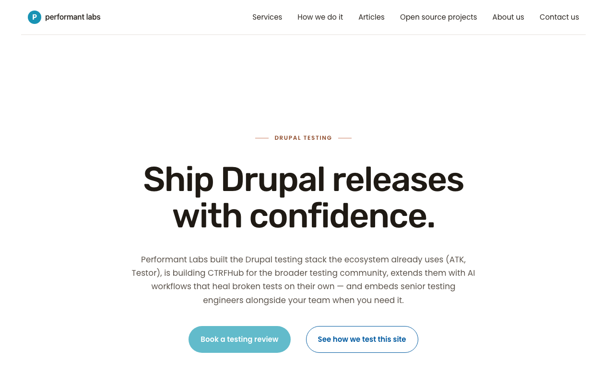
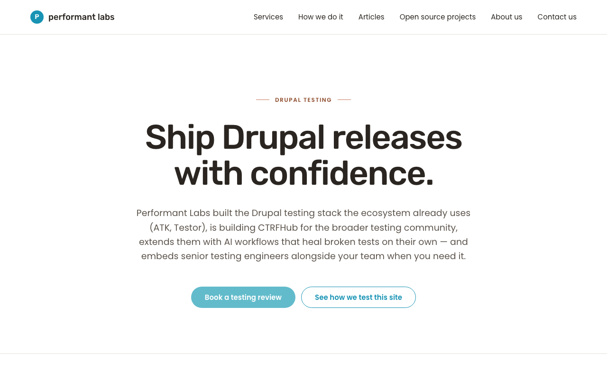
preview liveDiff (red = differing pixels)
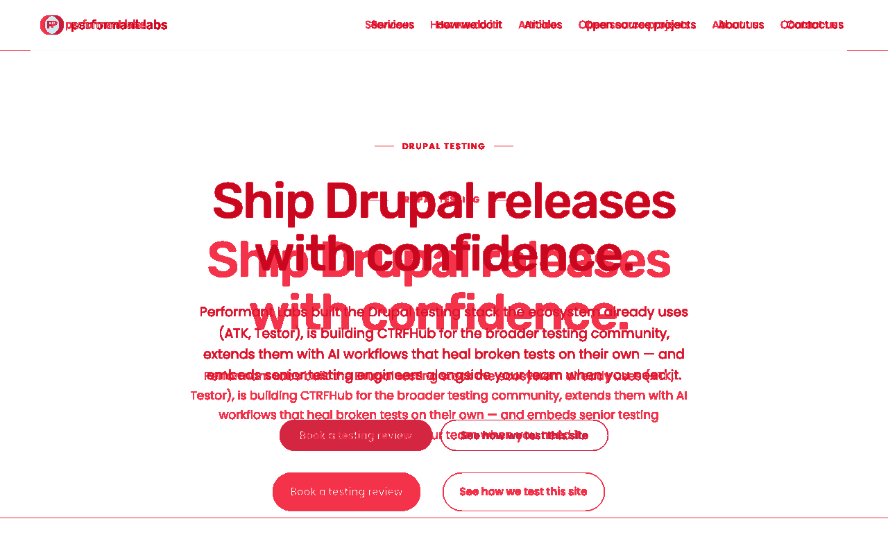
Side-by-side composite (preview | live)
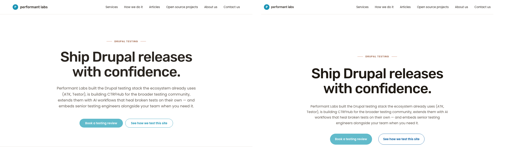
Services — 1280×800
Hero crop diff AE: 310,249 px (~30.3 %). High delta driven by both non-hero structural differences and by the H1 itself: live uses -1.8px / 1.10, preview uses -2px / 1.05. H1: MISMATCH on tracking + leading.
Wipe slider — preview (left) ↔ live (right)
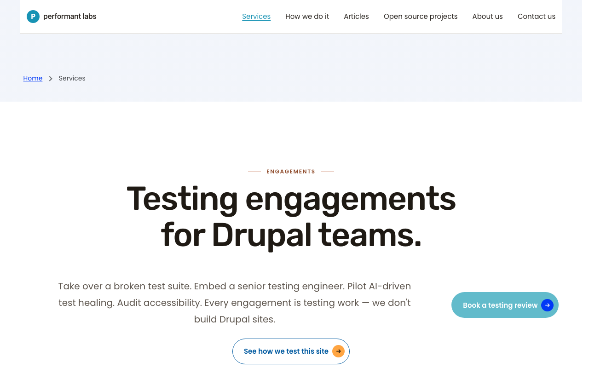
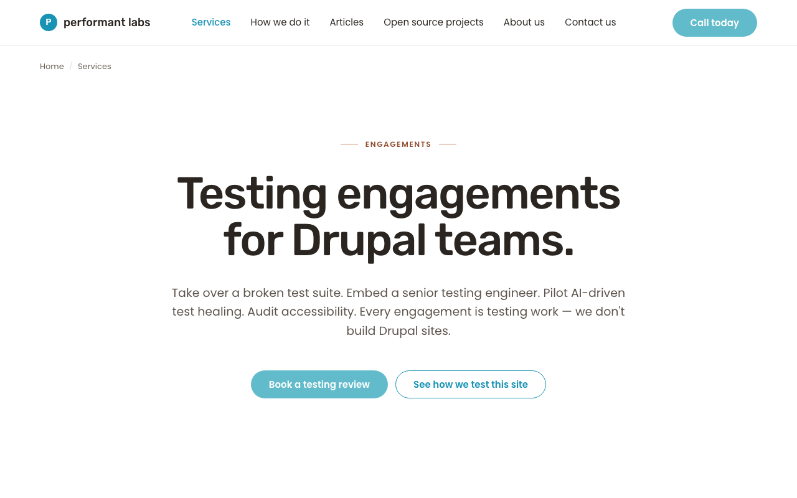
preview liveDiff
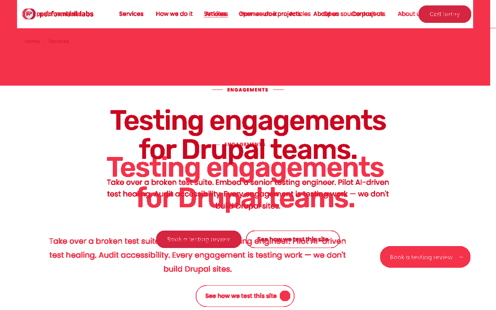
Side-by-side composite (preview | live)
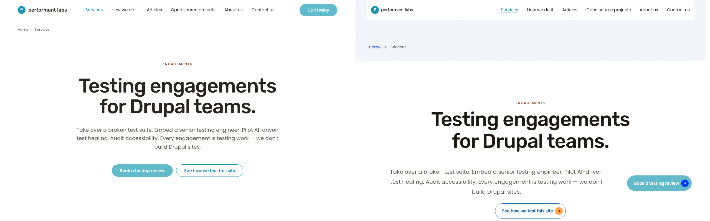
How we do it — 1280×800
Hero crop diff AE: 444,569 px (~43.4 %). H1 tracking + leading mismatch as above. H1: MISMATCH on tracking + leading.
Wipe slider — preview (left) ↔ live (right)
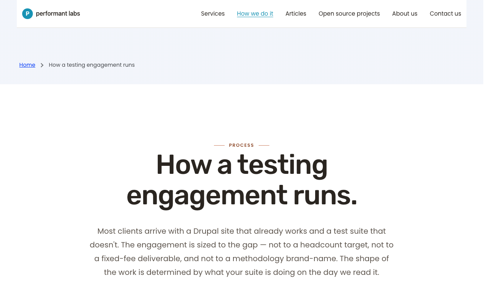
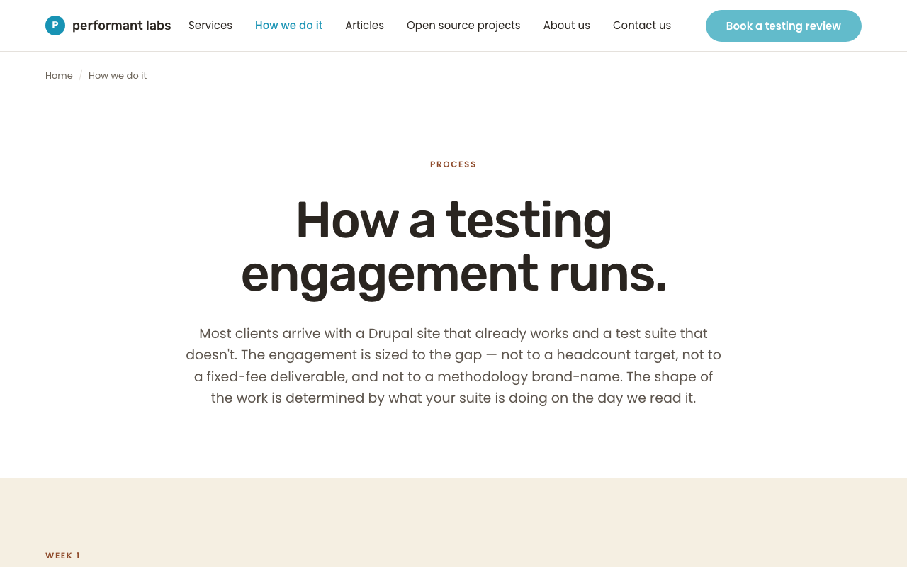
preview liveDiff
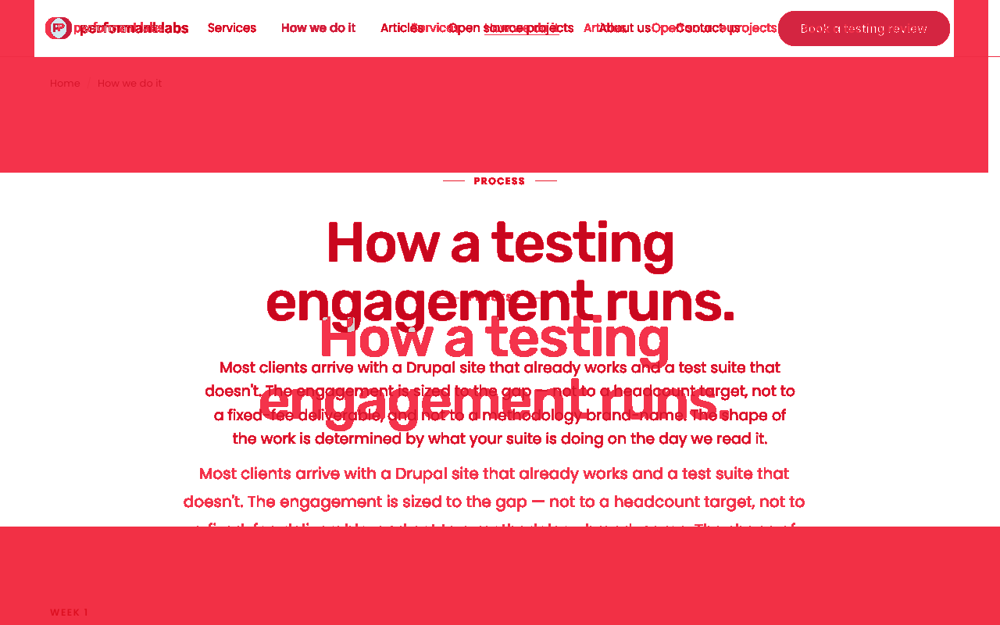
Side-by-side composite (preview | live)
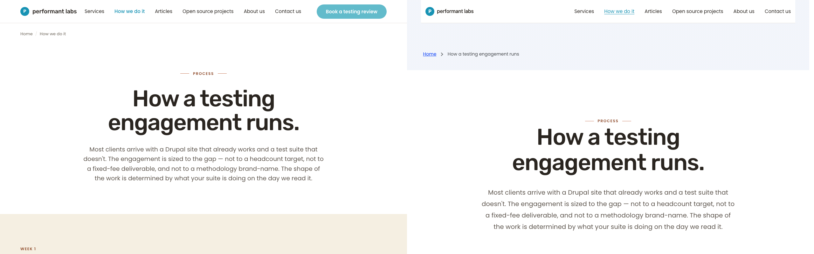
Open source projects — 1280×800
Hero crop diff AE: 372,731 px (~36.4 %). H1 tracking + leading mismatch as above. H1: MISMATCH on tracking + leading.
Wipe slider — preview (left) ↔ live (right)
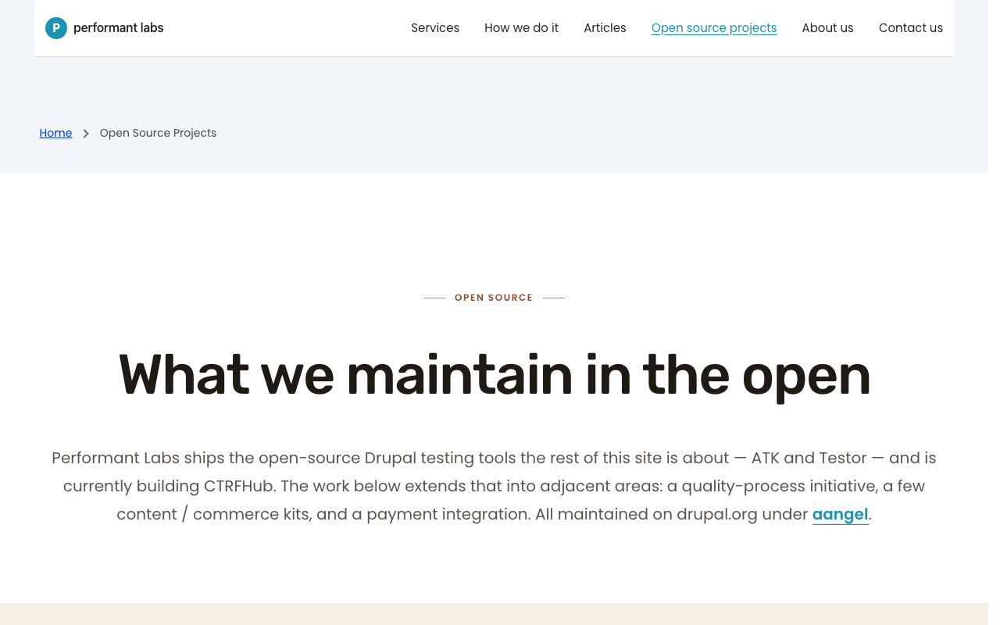
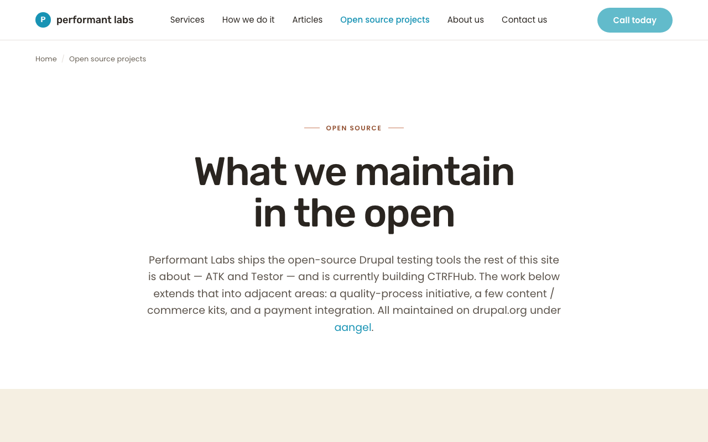
preview liveDiff
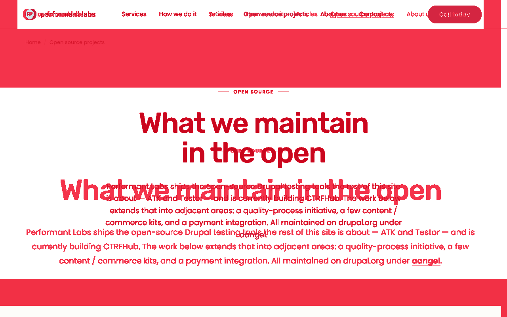
Side-by-side composite (preview | live)
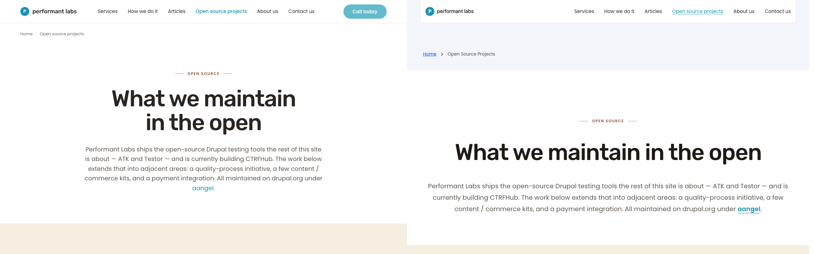
Per-section delta table
| Page | Section | Status | Description |
|---|---|---|---|
| homepage | Hero H1 type | MATCH | 72 / 500 / 1.05 / -2px on both preview and live. |
| homepage | Hero non-H1 | DELTA | Non-blocking. Preview hero block sits higher than live (live has more header + top padding). Outside this cycle's scope. |
| services | Hero H1 type | MISMATCH | Preview: 1.05 / -2px. Live: 1.10 / -1.8px. Same 72 / 500. |
| services | Hero non-H1 | DELTA | Non-blocking. Preview lacks the breadcrumb + red hero band that live shows above the eyebrow. |
| how-we-do-it | Hero H1 type | MISMATCH | Preview: 1.05 / -2px. Live: 1.10 / -1.8px. Same 72 / 500. |
| how-we-do-it | Hero non-H1 | DELTA | Non-blocking. Header + breadcrumb structural differences as on services. |
| open-source-projects | Hero H1 type | MISMATCH | Preview: 1.05 / -2px. Live: 1.10 / -1.8px. Same 72 / 500. |
| open-source-projects | Hero non-H1 | DELTA | Non-blocking. |
Recommendations — operator decision needed before next cycle
The runbook's stated source-of-truth for this cycle was the brief's display-xl token, and F honored it. But the resulting previews now diverge from live on three of four pages exactly on the AC the runbook lists second: "Previews match live (cross-page T3 at 1280)". Path A as written cannot satisfy both ACs simultaneously — they are mutually inconsistent. The operator must pick:
-
Option A — adopt live's values into the brief and previews. Update brief
display-xl.letterSpacingto-1.8pxanddisplay-xl.lineHeightto1.10. Update all four previews to match (homepage preview moves away from current live homepage). Then update live homepage to match the rest of live. Most invasive but produces full preview ↔ live ↔ brief parity. -
Option B — keep brief at -2px / 1.05; reconcile live's three non-home pages down to match. Update live CSS so services / how-we-do-it / open-source-projects use
--h1-letter-spacing: -2pxand--h1-line-height: 1.05on the hero. Previews stay as F shipped them. Cleanest spec-first option, but requires CSS work on live. -
Option C — accept the divergence and re-scope the AC. Treat the brief's
display-xlas a "homepage hero" token only, and codify a separate token (e.g.display-xl-landing:-1.8px / 1.10) for services / how-we-do-it / open-source-projects. Update the brief annotation F added in line 54 to reflect this split. Previews then need to flip back to-1.8px / 1.10on the three non-home pages.
Until the operator chooses, the pipeline should not push another F cycle — any cycle that re-touches these values will be re-litigating the same upstream ambiguity.
Sub-issue (only one — to be created after operator chooses a path):
- Branch:
aa/pl-sprint-4-phase-3.1-hero-h1-spec-reconcile. Problem: brief tokendisplay-xl, three live landing-page heroes, and the homepage hero are not internally consistent on letter-spacing and line-height. Operator must select option A / B / C above before F begins.
Acceptance criteria mapped
| Runbook AC | Status | Evidence |
|---|---|---|
| All four landing-page heroes render the same H1 size — 72 px (path A) | PASS | Computed font-size = 72px on all 8 surfaces; computed font-weight = 500 on all 8. |
| Previews match live (cross-page T3 at 1280) | FAIL on tracking + leading on services, how-we-do-it, open-source-projects. | Preview tracking -2px / leading 1.05; live tracking -1.8px / leading 1.10. Homepage matches. |
| Brief is consistent with rendered output | FAIL as above | Brief codifies -2px / 1.05 but only the homepage live renders that. Services/HWDI/OSP live render -1.8px / 1.10. |
| No regressions on non-hero H1 contexts (e.g. article body H1) | PASS (per T's file-grep audit) | T confirmed no non-.hero h1 selectors were touched. |